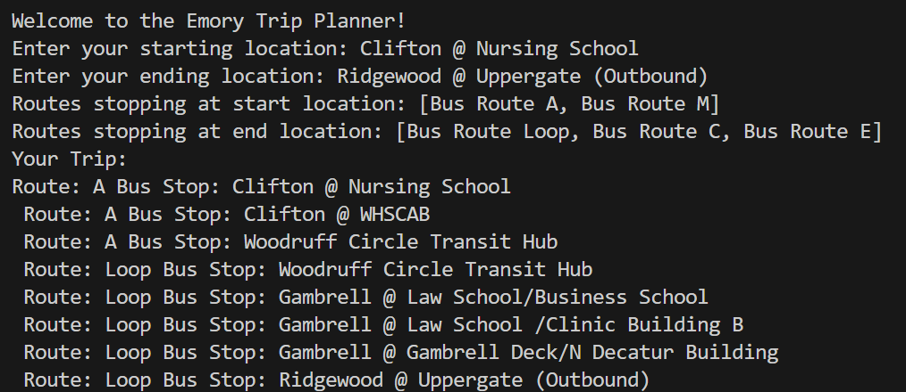

Trip Planner

Overview
This program takes user input of two stops to generate a route within the Emory bus network, including any necessary transfers. It generates linked lists of over 100 bus stops through text files and then traverses those linked lists, searching for common stops that the user could move to a different route to reach their destination. This was done using Java.
Key Features & Takeaways
- Generates the most efficient route between two stops within a short runtime
- Demonstrates an understanding of linked lists as a data structure, showing how to create and traverse them
- Taught object oriented programming with the trips, routes, and stops interacting with each other and storing data efficiently